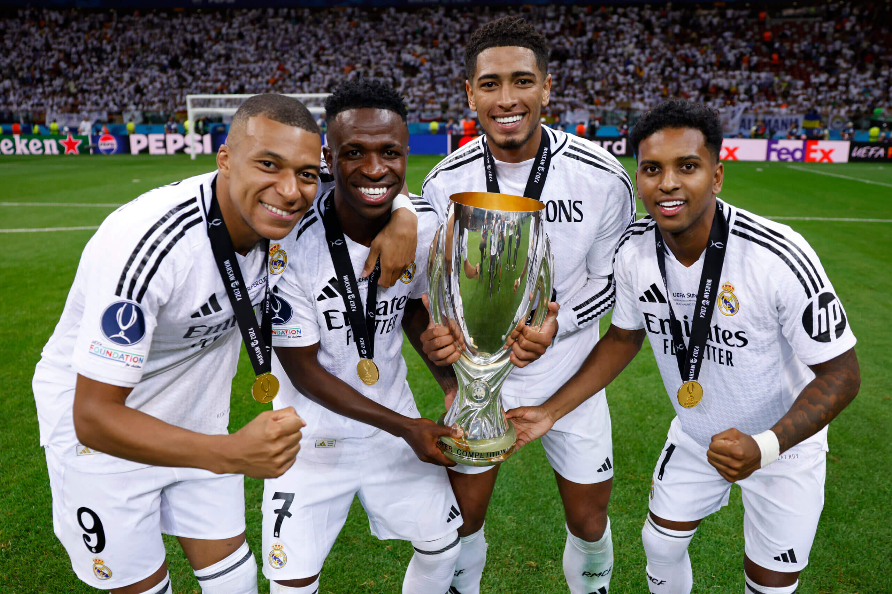
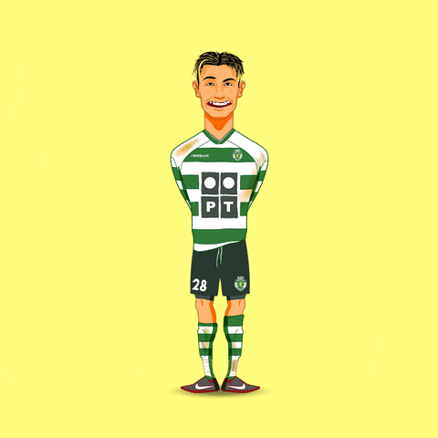

SOBRE MI
Me presento me llamo Cristian Acero, tengo 26 años vivo en suesca cundinamarca trabajo en la zipaquira como lider de compras, estudie administracion de empresas, no tengo hijos, soy hijo unico.
soy una persona muy reservada en mis cosas, mi grupo social la verdad es muy pequeño no soy mucho de tener gran cantidad de amistades, si no los que realmente apoyan y me aportan algo a mi vida, no soy mucho de salir a fiestas o algo asi,
siento que ya queme como esa etapa ahorita soy mas de planes tranqui, como salir a comer, a cine , o algun mirador.
Soy muy fifas, me encanta el futbol, mis fines de semana es ver futbol y descansar.
Cosas que mas me caracterizan:
1.me gusta mucho el futbol
4. mi animal favorito es el perro
5.antes no me gustaban las motos, pero compre la mia y ahora me gustan mucho
6.las peliculas que mas me gustan son de terror
7.quisiera irme a vivir a españa
MI EQUIPO DE FUTBOL
¡Hala Madrid y nada más!
Ser hincha del Real Madrid es más que solo apoyar a un equipo, es un sentimiento profundo, una pasión que recorre las venas desde el primer partido hasta el último. Cada victoria es una celebración, cada derrota, una oportunidad para seguir luchando. El Real Madrid no es solo un club de fútbol, es historia, es orgullo, es el equipo que ha marcado una era en el deporte mundial.
Desde la fundación en 1902, el Madrid ha demostrado ser un gigante, un equipo de leyenda, con estrellas que no solo brillan en el campo, sino que dejan una huella imborrable en la historia. Di Stéfano, Puskas, Zidane, Ronaldo, Raúl, Cristiano... son solo algunos de los nombres que han vestido la camiseta blanca y han hecho que el Santiago Bernabéu se llene de magia. Cada rincón del estadio resuena con los ecos de los momentos épicos que hemos vivido, desde la 'La Novena' hasta la 'La Decimocuarta'. ¡Y lo que nos queda!
Cuando escuchamos el himno, ese “¡Hala Madrid!” nos invade el alma, porque sabemos que, más allá de cualquier adversidad, el Real Madrid siempre dará lo mejor. Los desafíos nos hacen más fuertes. Como hinchas, estamos ahí en las buenas y en las malas. Cada gol, cada pase, cada parada del portero nos emociona como el primero, porque ser del Real Madrid es ser parte de una familia mundial, que celebra, sufre, y sueña juntos.
Y es que, ¿quién puede olvidar las noches mágicas de la Champions League? No hay otra competición que nos haya visto escribir tantas páginas doradas. El Madrid en Europa es el rey, no hay discusión. Es el club que ha demostrado una y otra vez que no importa lo que pase, siempre estamos en la lucha, siempre aspiramos al más alto nivel.
Ser hincha del Real Madrid no es solo cuestión de fútbol, es una forma de vida. Es vivir con la camiseta puesta en el corazón, es saber que cada temporada es una nueva oportunidad para seguir demostrando que somos el club más grande del mundo.
¡Hala Madrid y nada más!

JUGADOR FAVORITO
CRISTIANO RONALDO
Cristiano Ronaldo es uno de los futbolistas más grandes de todos los tiempos. Nacido en Madeira, Portugal, ha brillado en clubes como el Manchester United, Real Madrid, Juventus y Al-Nassr, además de ser el máximo goleador histórico de la selección portuguesa.
Es admirado no solo por su increíble talento, velocidad y capacidad goleadora, sino también por su disciplina, ética de trabajo y mentalidad ganadora. Su dedicación al entrenamiento, su ambición constante y su liderazgo lo convirtieron en un ícono mundial dentro y fuera del campo.
En resumen: Cristiano no solo juega fútbol, inspira con su esfuerzo y determinación.
